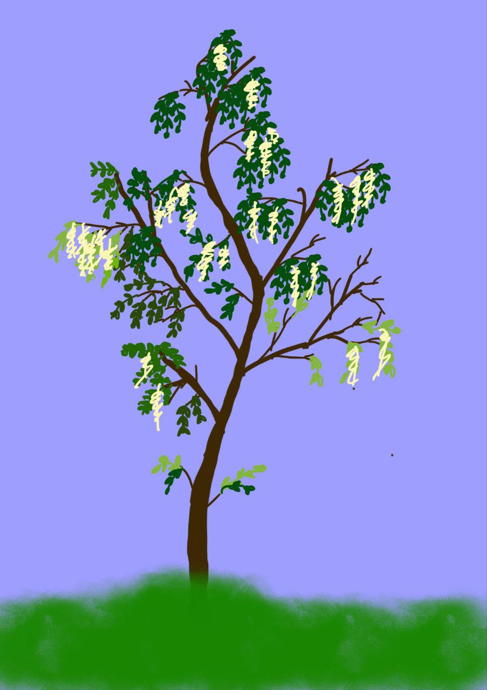

Акація
Акація, зокрема біла акація, є добре відомим деревом у Вінницькій області. Спочатку завезена з Північної Америки, біла акація добре адаптувалася до кліматичних та ґрунтових умов України. Це дерево може виростати до 25 метрів у висоту і характеризується ніжною кроною та тонкими, подовженими листками.